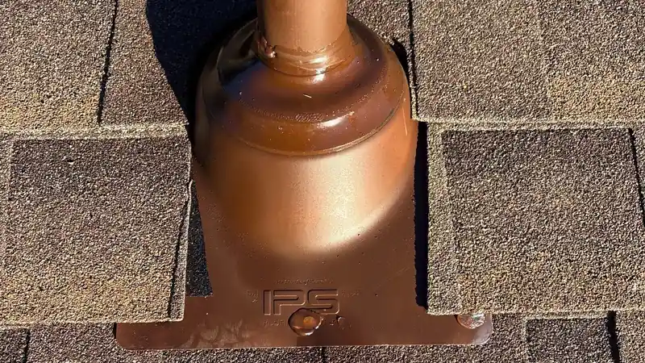
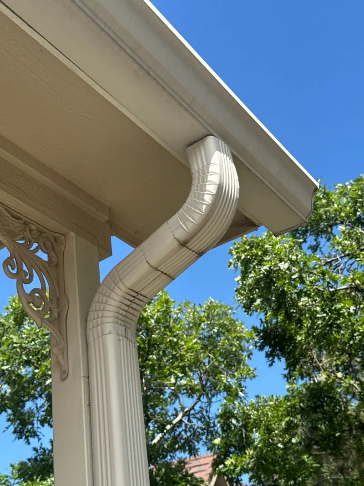
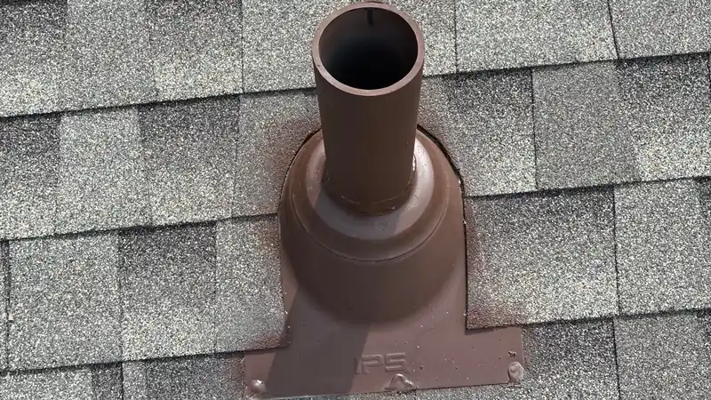
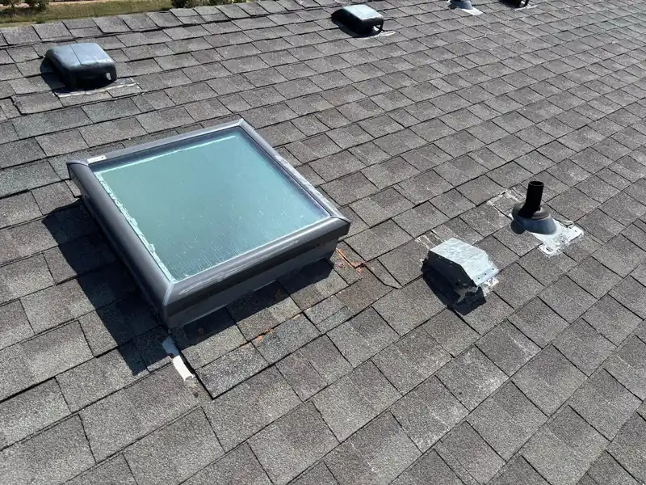

Roofing in Knoxville, TN
Roof repair in Knoxville
Most leaks start in one spot: a cracked pipe boot, loose flashing, a few shingles the wind took. One spot is a repair, and that's what you'll get priced. Text a photo to (865) 830-8126 or book a free inspection.

- Family roofing company. Since 2018.
- 4,000+ projects documented. On record, job by job.
- Free inspections. Written, line-by-line prices.
- 24-hour emergency line. Leaks and storm damage, any hour.
- All of East Tennessee. Twelve counties, one phone number.
Signs you need a repair
- A ceiling stain that grows after a hard rain.
- A drip that shows up only when rain blows sideways.
- Shingles, or pieces of them, in the yard after a windy night.
- Nail heads pushing up through the shingles. Each one is a small hole waiting for water.
- A pile of granules at the bottom of one downspout.
- Water spilling over one corner of the gutter and soaking the wall below.
A small leak left for a season soaks the decking and the insulation, and that's when a cheap repair gets expensive.

Repair or replace?
A repair makes sense when the problem sits in one place and the rest of the roof is sound: shingles lie flat, the granules are still on, and the roof has good years left. Replacement makes sense when leaks keep turning up in other places, the shingles are curling or brittle across whole slopes, or you've paid for two repairs in a few years already.
When it's close, you'll get both prices in writing, the repair and the roof replacement, and the call is yours.
What we fix
- Pipe boots. The rubber collar around a plumbing vent cracks in the sun long before the shingles wear out. It's the leak we find most.
- Flashing. The metal where the roof meets a wall, a chimney or a skylight. When it pulls loose, or was caulked instead of tucked under the shingles, water runs behind it.
- Missing or creased shingles. Wind gets under the edges and the ridge first.
- Nail pops. The nail that backed out gets pulled, the hole sealed, and the shingle fastened down beside it.
- Valleys. Water runs hardest where two slopes meet, so worn shingles there go first.
- Vents. Cracked vent caps, and ridge vent lifted at the ends.

What goes into a repair
A repair uses the same materials a full roof gets, just less of them. Shingles are matched to the maker, line and color on your roof as closely as the supplier can match today. Ice and water shield goes under anything rebuilt at a valley, a wall or a pipe. A cracked boot gets replaced, not smeared over, and flashing goes back under the shingle above it, the way it was meant to sit.
A thick bead of roof cement over a problem is a patch. It dries out and cracks in a few summers, usually right before a storm. That's not what you're paying a roofer for.

What moves the price
- How many spots need work, and how far apart they are.
- How steep and high the roof is. Steep roofs take more safety gear and more time.
- Whether the wood under the leak has gone soft. Wet decking gets cut out and replaced.
- Matching. A color that's out of production can mean a wider repair, so the patch ends where the eye won't catch it.
- Flashing at a chimney or skylight, which takes more labor than a few shingles.
Your free inspection ends with a written price for the repair, one line for each part of it.
How long it takes
Most repairs are done in a single visit. Two things can hold one up: wet weather, and shingles in the right color. A common color can come straight from the supplier. An older one may need ordering, and in the meantime anything open gets covered so it can't leak.
Warranty on a repair
The shingles and boots we install carry their makers' warranties. A repair fixes the spot it touches. It doesn't reset the clock on the rest of an older roof, and a roofer who tells you it does is overselling. Ask for our written workmanship terms with your price.
See the work
Good flashing, boots and valleys look like nothing at all from the yard, which is the point. See finished roofs from our crews on the projects page, and read where roofs leak for the spots worth watching on your own house.
Questions about roof repair
Can't you just caulk it?
Caulk and roof cement have a place, like sealing a fastener head or the groove where counterflashing meets brick. As the whole repair, they fail. Sun and heat dry them out, they crack, and the leak comes back with the next hard rain. A leak at a pipe boot gets a replacement boot. A leak at flashing gets the flashing reset under the shingles. It costs a little more the first time and a lot less over the life of the roof.
Can you repair just one spot on my roof?
Yes, and most of the time that's the right call. A cracked pipe boot, a few missing shingles or a loose piece of flashing can be fixed on its own. The hard part is matching: shingle colors get discontinued and old ones fade, so ask to see a sample before it goes on. If the roof is worn out across whole slopes, a single repair buys little time, and we'll tell you so.
Is it a repair or a replacement?
Look at the whole roof, not just the leak. If the shingles lie flat, still have their granules and the roof has good years left, fix the spot. If leaks keep showing up in other places, shingles are curling or cracking across whole slopes, or the roof is 20 years old or more, replacement is usually the better money. When it's close, ask for both prices in writing and compare.
What if replacement shingles don't match the rest of my roof?
It happens a lot, because colors get discontinued and old shingles fade. For a repair, we find the closest match we can, and you can see a sample before it goes on. After a storm claim, ask your insurer in writing how your policy treats a roof that won't match.
Can I just text you a photo?
Please do. Text a photo of the problem (the ceiling stain, the shingles in your yard, the spot you can see from the street) to (865) 830-8126 with your address. We'll text back what it looks like and whether someone needs to come out. It's the fastest way to find out if a problem is small.
Get a written price on your repair
Four boxes. We'll call you back to pick a time.
Rather talk? Call (865) 830-8126. Rather text? Send a photo.